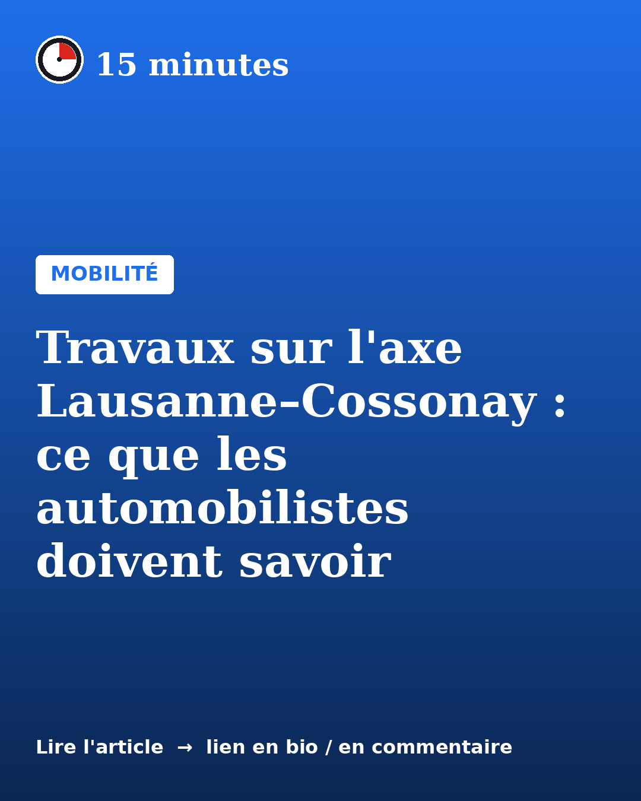
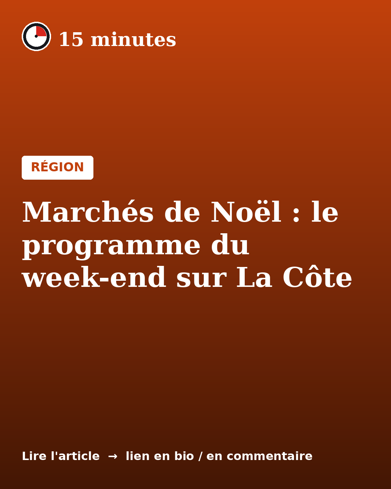
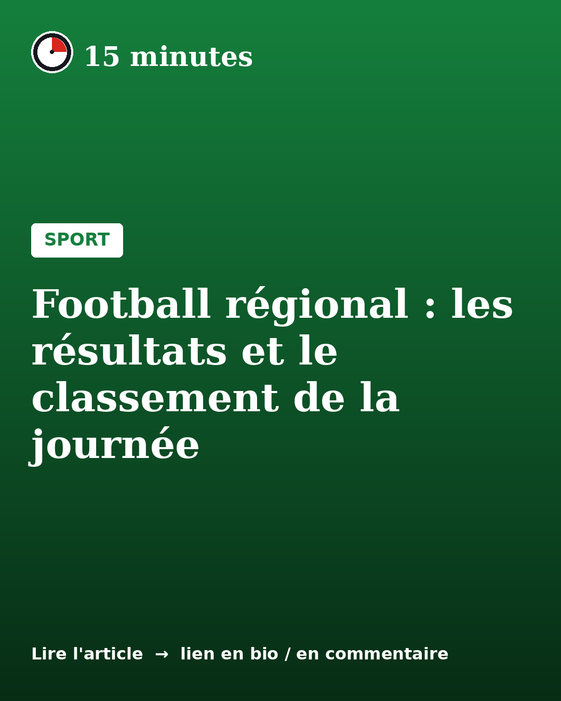

Mobilité
Travaux sur l'axe Lausanne–Cossonay : ce que les automobilistes doivent savoir
Article d'exemple pour montrer la mise en page : circulation alternée, déviations et durée estimée du chantier.

Région
Marchés de Noël : le programme du week-end sur La Côte
Article d'exemple : agenda, horaires et conseils pratiques pour les sorties du week-end.

Sport
Football régional : les résultats et le classement de la journée
Article d'exemple : résumé des matchs, buteurs et prochaine journée.